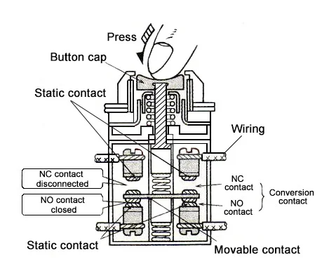

Push Button
Push button switches, also referred to as pushbutton switches, are devices that can create or
break circuit connections upon being pressed. They are widely used for managing a plethora of
electronic systems and devices.
Examples you see every day: doorbells, keyboard
keys,
and calculator buttons.
Working Principle
The working principle of the push button switch is shown in the figure below: There is an electromagnet adsorption device inside the button. When the button is pressed down, the electromagnet is energized to generate magnetism, and the circuit is connected or disconnected by the adsorption device to realize functions such as remote control circuit.
Types of Push Button Switch
There are several types of push button switch available based on design, operation, and
functionality. Understanding the different types of push-button switches can help you choose the
right one for a particular application.
Earth fault relay calculation enables engineers to establish appropriate relay sensitivity,
which prevents false tripping and failure to detect genuine faults. The steps typically include:
- Momentary Push Button Switch:
- Active only when pressed.
- Common in calculators, doorbells, and gaming controllers.
- Latching Push Button Switch:
- Stays on/off until toggled again.
- Used in power circuits and appliances.
- Illuminated Push Button Switch:
- Features built-in LED indicators.
- Ideal for dashboards and control panels.
- Double Pole Push Button Switch:
- Controls two circuits at once.
- Used in complex electrical systems.
- Emergency Stop Push Button:
- Large red button for safety.
- Pressing it stops machinery instantly.